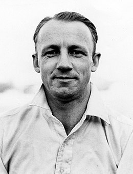
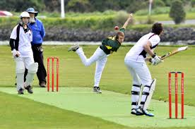
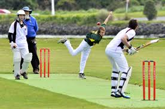

Bat and Ball...
Intro to Cricket
Cricket is a bat-and-ball game played between two teams of eleven players on a
field at the centre of which is a 20-metre pitch with a wicket at each end, each
comprising two bails balanced on three stumps. The batting side scores runs by
striking the ball bowled at the wicket with the bat, while the bowling and fielding
side tries to prevent this and dismiss each player. Means of dismissal include being
bowled, when the ball hits the stumps and dislodges the bails, and by the fielding side
catching the ball after it is hit by the bat, but before it hits the ground. When ten
players have been dismissed, the innings ends and the teams swap roles.
Some Facts about Cricket
- It is said that cricket originated in England. Since they used to raise sheep, the grass was so short that it was possible to roll a lump of wool on it which they used as a ball.
-
Saurav Ganguly is the only player to win four consecutive Man of the Match awards in ODIs.

- The longest cricket match took place in 1939 between England and South Africa, after 14 days it ended with a tie.
- England is the only nation which has hosted most number of World Cups (4) the next is India
and Pakistan (2-both jointly)

- Australia is the only team which has won 4 world cups in which three world cup wins came in a row (1997, 2003 & 2007).
- On the morning of 11/11/11 South Africa needed 111 runs to win at 11:11.
- At 19, Sachin Tendulkar became the youngest Indian to play county cricket.
- Chris Gayle is the only batsman to hit a six off the first ball of a Test match.
- Cricket has been played at Olympics only once - in 1990, at the 2nd modern day Olympics , Athens.
-
Indian Team is the only one to have won world cups of 60 overs, 50 overs and 20 overs.
Top 3 Batsmen and Bowlers in Test Cricket
| Name | Country | Batsman/Bowler | Rating | Image |
|---|---|---|---|---|
| Donald Bradman | Australia | Batsman | 1349.0 |  |
| Sachin Tendulkar | India | Batsman | 1000.5 | |
| Viv Richards | West Indies | Batsman | 913.9 |  |
| Muttiah Muralitharan | Sri Lanka | Bowler | 1320.4 | |
| Richard Hadlee | New Zealand | Bowler | 1232.9 | |
| Sydney Barnes | England | Bowler | 1209.3 |  |
Top 3 Batsmen and Bowlers in ODI Cricket
| Name | Country | Batsman/Bowler | Rating | Image |
|---|---|---|---|---|
| Viv Richards | West Indies | Batsman | 1132.5 | |
| Sachin Tendulkar | India | Batsman | 1119.3 | |
| Michael Bevan | Australia | Batsman | 1036.8 | |
| Wasim Akram | Pakistan | Bowler | 1223.5 | |
| Allan Donald | South Africa | Bowler | 1180.1 | |
| Waqar Younis | Pakistan | Bowler | 1167.1 |
Some Random Pictures
 
